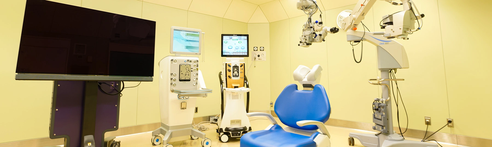

电话
电话Surgery Methods
手术方式
飞秒激光技术

飞秒激光辅助白内障手术是目前最先进的白内障手术技术，采用飞秒激光精确制作切口和撕囊，相比传统手术具有更高的精确性和安全性。
飞秒激光技术的优势包括：精确的切口制作、完美的环形撕囊、晶状体预分割、减少超声能量使用，从而降低手术风险，提高手术效果。
飞秒激光手术的特点：
- 精确性：激光制作的切口精度可达微米级别
- 安全性：减少手术并发症的发生率
- 可预测性：手术结果更加可预测和稳定
- 个性化：根据每位患者的眼部结构定制手术方案
我们的飞秒激光设备采用国际先进技术，为患者提供最高标准的手术治疗。手术全程由经验丰富的专业医生操作，确保手术安全和效果。
超声乳化技术
超声乳化技术是现代白内障手术的金标准，通过超声波将混浊的晶状体乳化并吸出，然后植入人工晶体。这种技术具有切口小、恢复快、并发症少的优点。
超声乳化技术的优势：
- 微创手术：切口仅2-3毫米，无需缝合
- 恢复迅速：术后当天即可回家，第二天可正常用眼
- 安全性高：手术时间短，通常15-20分钟完成
- 效果稳定：视力恢复效果好，满意度高
手术适应症：
- 各种类型的白内障患者
- 视力影响日常生活的患者
- 有手术意愿且身体条件允许的患者
- 对视觉质量有较高要求的患者
-
传统超声乳化技术
技术特点：成熟稳定的手术方式，适用于大多数白内障患者
手术优势：操作简便、成本较低、安全性高、恢复较快
适用人群：一般白内障患者、对手术要求不高的患者
-
飞秒激光辅助超声乳化
技术特点：结合飞秒激光和超声乳化技术的先进手术方式
手术优势：精确度更高、创伤更小、恢复更快、并发症更少
适用人群：对手术精度要求高的患者、复杂白内障患者
-
微切口超声乳化
技术特点：采用更小的切口进行手术，通常小于2.2毫米
手术优势：创伤最小、愈合最快、散光影响最小
适用人群：追求快速恢复的患者、有散光顾虑的患者
功能性人工晶体
功能性人工晶体是白内障手术的重要组成部分，不同类型的人工晶体可以满足患者不同的视觉需求。我们提供多种先进的功能性人工晶体，帮助患者获得最佳的术后视觉效果。
人工晶体的选择原则：
- 根据患者的生活方式和视觉需求选择
- 考虑患者的眼部条件和健康状况
- 平衡视觉质量和经济因素
- 充分沟通，确保患者理解和接受
-
单焦点人工晶体
特点：提供单一焦点的清晰视力，通常设定为远距离视力
优势：视觉质量高、对比敏感度好、适应性强、价格经济
适用人群：对近距离工作要求不高的患者、可接受戴老花镜的患者
-
多焦点人工晶体
特点：提供远、中、近多个焦点，减少对眼镜的依赖
优势：视觉范围广、生活便利、减少眼镜依赖
适用人群：活跃的生活方式、不愿戴眼镜的患者
-
散光矫正人工晶体
特点：同时矫正白内障和散光，提供更清晰的视力
优势：一次手术解决两个问题、视觉质量显著提升
适用人群：合并散光的白内障患者、追求高视觉质量的患者
-
三焦点人工晶体
特点：提供远、中、近三个清晰焦点，视觉连续性好
优势：全程视力、视觉质量高、适应性强
适用人群：对视觉质量要求极高的患者、专业工作需求的患者
手术流程
飞秒激光辅助超声乳化联合功能性人工晶体植入是我们的特色手术技术，整个手术过程精确、安全、高效。以下是详细的手术流程介绍。
手术前准备：
- 全面眼科检查和术前评估
- 人工晶体度数精确计算
- 手术方案个性化设计
- 患者术前宣教和准备
-
第一步：飞秒激光预处理
时间：约5-8分钟
过程：使用飞秒激光制作精确的角膜切口、撕囊和晶状体预分割
优势：精确度达微米级别，减少手术创伤，提高安全性
-
第二步：超声乳化摘除
时间：约8-12分钟
过程：通过超声波将预分割的晶状体乳化并吸出
优势：能量使用更少，对眼部组织损伤更小
-
第三步：人工晶体植入
时间：约3-5分钟
过程：将选定的功能性人工晶体精确植入眼内
优势：位置精准，视觉效果最佳
-
第四步：术后观察
时间：约30分钟
过程：观察眼压、切口愈合情况，确认手术效果
优势：及时发现并处理可能的问题，确保手术安全